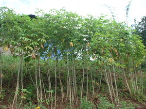
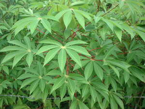
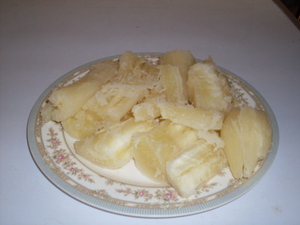
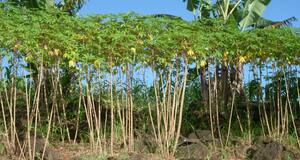

binggala    
/biŋgala/
n.
“cassava”
n.
Manihot_esculenta_crantz
cassava
Mananam ka egbinayuwen ne binggala, labi en iya ke egsewuhan te niyug wey asukal.
The pounded cassava is very yummy especially if you put a coconut and sugar in it.
Wrd.Gloss: cassava
Eng. cassava; tapioca plant; manioc
Tag. kamoóteng káhoy
Ceb. kamoting kahoy; balinghuy; binggala
Ilo.: kamoté ti moro
OCM: Flora (137), Vegetable Production (244)
Online dict status: -
Usage level: B
adj.
(binggalaan, bimgga:n, -an) cassava plantation
Eng. cassava plantation
Online dict status: -
Usage level: B
Updated by: RJH,AAA,RUL,QDL
Last updated: 14/Nov/2009
"binggala" in text "Long Ago I"
This page last updated: 19/May/2012
Copyright © 2009-2010, Matigsalug Language Christian Association, Inc